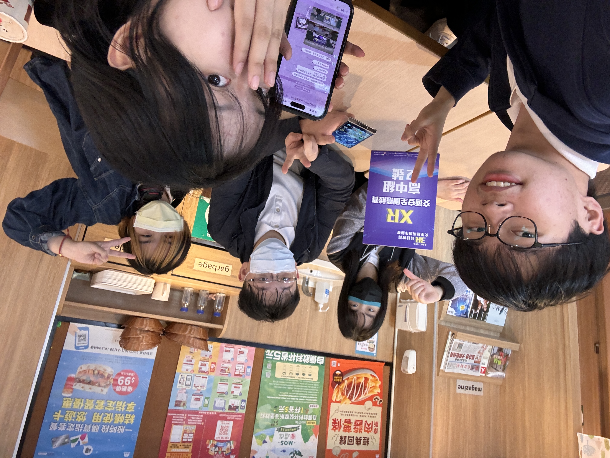
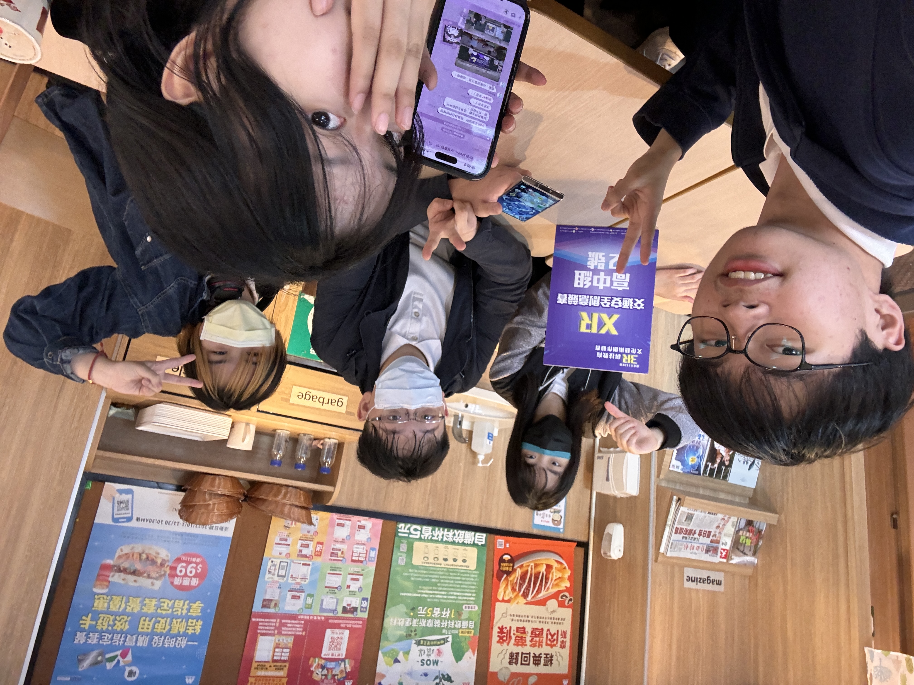

3R 科技教育文化藝術創作-交通安全組
關於比賽
因應全球化數位學習新趨勢，這個比賽透過競賽激發師生的建構力、創造力與表達力，加強數位內容科技創建能力，同時結合行動學習與跨域學習，鼓勵學生以科技創作融合藝術文化及交通安全議題，展現創新藝文能力，提升多元智慧應用及交通安全素養。在這個比賽的交通安全組規定使用VR AR XR等虛擬實境技術來表達交通安全相關的內容。
因應全球化數位學習新趨勢，這個比賽透過競賽激發師生的建構力、創造力與表達力，加強數位內容科技創建能力，同時結合行動學習與跨域學習，鼓勵學生以科技創作融合藝術文化及交通安全議題，展現創新藝文能力，提升多元智慧應用及交通安全素養。在這個比賽的交通安全組規定使用VR AR XR等虛擬實境技術來表達交通安全相關的內容。
 
